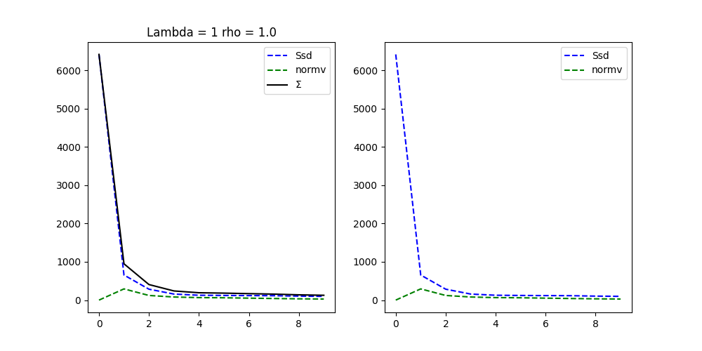
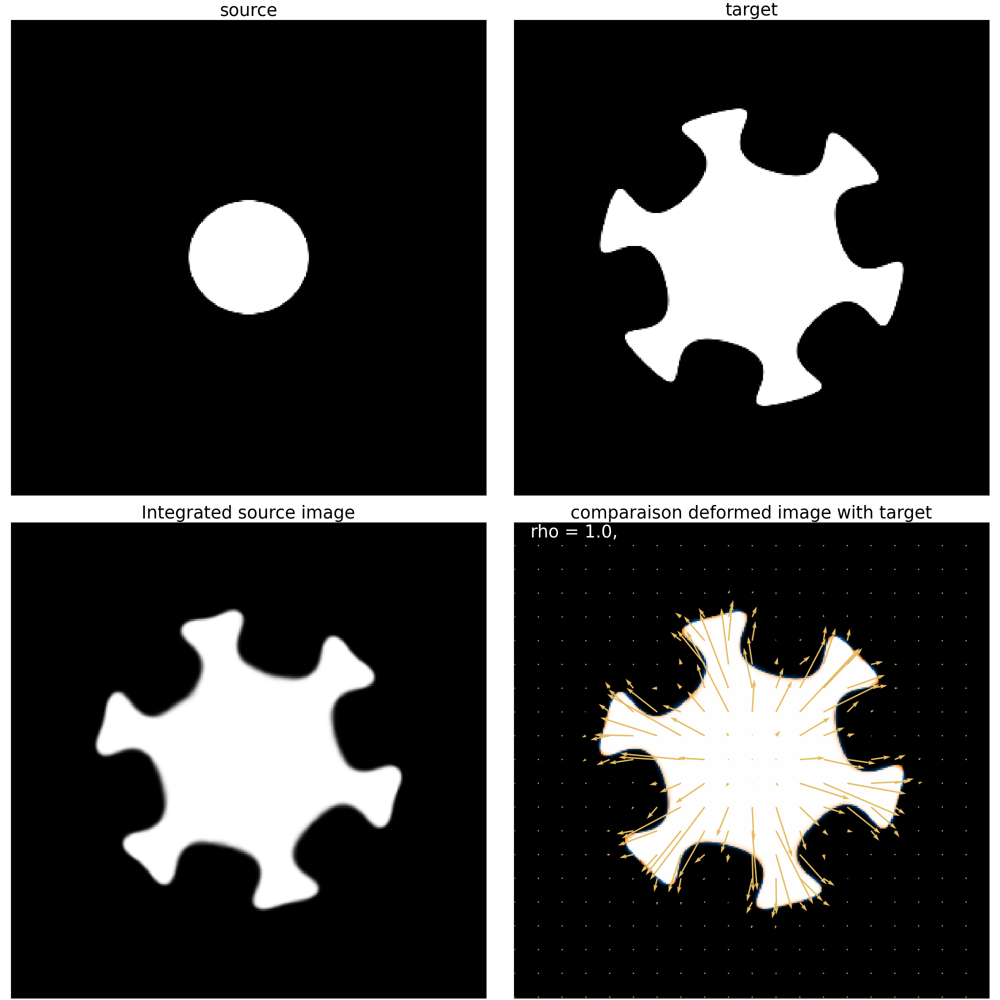

Note
Go to the end to download the full example code.
A Gaussian Reproducing Kernel
This page is not only meant to show you how to use the Gaussian Reproducing Kernel (GRK) but also, to provide you with everything you need to know about kernel operators in the Demeter library: how they are used and the available options. If you are familiar with reproducing kernels on point cloud data, you might be surprised. Since we are working with images, it is as if we had a point cloud where each pixel is a Dirac with its weight being the pixel intensity. As a result, there is a large number of closely spaced points.
This is why, instead of using a classical kernel that computes the distance between
points, we perform the same operation using a convolution.
In metamorphosis, the RK is used to parameterize the space of acceptable vector fields \(V\) through its norm, and is used to compute the vector field from the momentum.
where \(p\) is the momentum, \(I\) the image and \(K_{\sigma}\) the Gaussian RK operator. we also call \(p \nabla I\) the field momentum.
Importing the necessary libraries
import numpy as np
from demeter.constants import DLT_KW_IMAGE
import matplotlib.pyplot as plt
import torch
import demeter.utils.reproducing_kernels as rk
import demeter.utils.torchbox as tb
import demeter.utils.bspline as bs
import demeter.metamorphosis as mt
To use the Gaussian RK, we need to choose a sigma. The larger the sigma, the more the RK will smooth the vector fields. The smaller the sigma, the more the RK will keep the high frequency information of the vector fields. We choose sigmas in pixel units, meaning that the gaussian will reach a value of 0.01 at about a distance of 3 sigma pixels from the center. We define the sigma as a tuple \((\sigma_x,\sigma_y)\) (or \((\sigma_x,\sigma_y,\sigma_y)\) in 3d) to allow for anisotropic smoothing and to give the dimensions of the image.
sigma = (4,2)
kernelOp = rk.GaussianRKHS(sigma)
print(kernelOp)
kernelOp.plot()
GaussianRKHS,2D
filter :fft_filter, sigma :(4, 2)
kernel_size :(1, 49, 25)
kernel_reach :6
normalized :True
In the cell above, we initialized a Gaussian RK operator with sigma = (10,5). You can print the operator to see its parameters. You can see the kernel size and its reach. The kernel size is the size of the kernel in pixel units. The reach is the distance at which we want to truncate the kernel. A reach of 3 means will be truncated at 3 sigma from center to edge.
This operator in meant to smooth the vector field momentum in the Metamorphosis geodesic equation. Before, to use it in a Metamorphosis registration, let’s visualize its effect on a synthetic vector field.
# Create a synthetic vector field
H,W = 30,30
s = .5
# Random control matrix
cms = torch.rand((2,int(H*s),int(W*s)),dtype=torch.float) * 2 - 1
cms *= 5
field = bs.field2D_bspline(cms, n_pts = (H,W), degree=(1,1), dim_stack=-1)[None]
smoothed_field = tb.im2grid(kernelOp( tb.grid2im(field) ))
ic(field.shape, smoothed_field.shape)
fig,ax = plt.subplots(1,2,figsize=(10,5))
tb.quiver_plot(field, title='Original field', step=1,ax=ax[0],check_diffeo=True)
tb.quiver_plot(smoothed_field, title='Smoothed field', step=1,ax=ax[1],check_diffeo=True)
plt.show()
a tensor of shape (1,H,W,2) where H and W are the height and width of the image. You might find it strange that we pass the field in image representation to the kernel operator. This mostly for efficiency reasons, see pytorch stride <https://discuss.pytorch.org/t/pytorch-tensor-stride-how-it-works/90537> for more information.
In the plot above, we can see the effect of the Gaussian RK on a synthetic vector field. We show the “diffeomorphismness” of the field by plotting the sign of the Jacobian of the field. Green means that the Jacobian is positive, red means that the Jacobian is negative, and the image must be all green for the deformation to be a diffeomorphism. We can see that the smoothed field is a diffemorphism !
Good, now lets try on a real use case. First let’s load a source and image target: Try to change the size and the proposed sigma to see their effects on the registration results. Feel free to try different values that the one proposed.
device = 'cpu'
if torch.cuda.is_available():
device = 'cuda:0'
print('device used :',device)
size = (300,300)
# size = (300,150)
source = tb.reg_open('01',size = size)
target = tb.reg_open('star_sr5_r10',size = size)
fig, ax = plt.subplots(1,3,figsize=(10,5))
ax[0].imshow(source[0,0],**DLT_KW_IMAGE)
ax[0].set_title('source')
ax[1].imshow(target[0,0],**DLT_KW_IMAGE)
ax[1].set_title('target')
ax[2].imshow(tb.imCmp(source,target,'compose'),origin='lower')
ax[2].set_title('superposition of source and target')
plt.show()
device used : cpu
Now let’s try to register the source to the target using LDDMM with differents sigma values.
source = source.to(device)
target = target.to(device)
# sigma = (10,5) # wonky result
sigma = (10,10) # good result
# sigma = (20,20) # cannot get details.
kernelOp = rk.GaussianRKHS(sigma)
print(kernelOp)
mr = mt.lddmm(source,target,0,
kernelOperator = kernelOp,
n_iter = 10,
cost_cst=1,
grad_coef=1,
integration_steps=15,
dx_convention='square',
)
GaussianRKHS,2D
filter :fft_filter, sigma :(10, 10)
kernel_size :(1, 121, 121)
kernel_reach :6
normalized :True
Progress: [##--------] 20.00% (Ssd : ,655.1315).
Progress: [###-------] 30.00% (Ssd : ,285.0678).
Progress: [####------] 40.00% (Ssd : ,157.9997).
Progress: [#####-----] 50.00% (Ssd : ,126.9168).
Progress: [######----] 60.00% (Ssd : ,121.4015).
Progress: [#######---] 70.00% (Ssd : ,117.6779).
Progress: [########--] 80.00% (Ssd : ,115.2220).
Progress: [#########-] 90.00% (Ssd : ,104.2477).
Progress: [##########] 100.00% Done...
(Ssd : , 97.9167).
Computation of forward done in 0:00:30s and 0.844cents s
Computation of lddmm done in 0:00:30s and 0.844cents s
Integration and convergence plot. Then we compare the source, target and registered source images
mr.plot()
- 
- 
((<Figure size 1000x500 with 2 Axes>, array([<Axes: title={'center': 'Lambda = 1 rho = 1.0'}>, <Axes: >],
dtype=object)), (<Figure size 2000x2000 with 4 Axes>, array([[<Axes: title={'center': 'source'}>,
<Axes: title={'center': 'target'}>],
[<Axes: title={'center': 'Integrated source image'}>,
<Axes: title={'center': 'comparaison deformed image with target'}>]],
dtype=object)))
This plot shows the deformation as a grid and arrows. along with the deformed image.
mr.plot_deform()
plt.show()
Total running time of the script: (0 minutes 33.124 seconds)